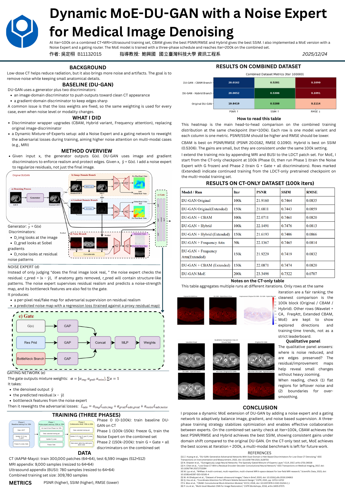

Research project研究專案20242024
MoE-DUGAN: Generative Denoising for Low-Dose CTMoE-DUGAN：低劑量 CT 生成式去雜訊
Lab of AI & Computer Vision · NTUSTAI 與電腦視覺實驗室 · NTUST
From the portfolio of Louis (DingXu) WuLouis 吳定栩的專案作品集
An undergraduate research project extending the dual-discriminator DUGAN architecture with expert routing and adaptive adversarial-loss weighting for low-dose CT denoising.大學部研究專題：延伸 dual-discriminator DUGAN 架構，加入 expert routing 與可調式對抗 loss 權重，用於低劑量 CT 去雜訊。
Highlights
- Extended the dual-discriminator DUGAN architecture into MoE-DUGAN for low-dose CT image denoising.
- Designed expert routing around image noise characteristics and implemented a Noise Expert module that adapts adversarial-loss weights.
- Analyzed image features and loss behavior under different noise conditions to guide the mixture-of-experts training design.
Tech Stack
研究亮點
- 將 dual-discriminator DUGAN 架構延伸為 MoE-DUGAN，用於低劑量 CT 影像去雜訊。
- 依影像雜訊特性設計 expert routing，並實作可調整對抗 loss 權重的 Noise Expert。
- 分析不同雜訊條件下的影像特徵與 loss 行為，據此調整 mixture-of-experts 訓練設計。
技術
Research poster研究海報
PDF